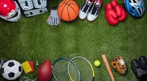

Having good quality products for the gym is essential for anyone serious about their fitness journey. Quality gear—like durable workout clothes, supportive shoes, and reliable equipment—not only improves performance but also helps prevent injuries. For example, proper footwear provides the stability and cushioning needed for lifting or running, while well-made resistance bands or weights ensure safety and effectiveness during workouts. Additionally, comfortable, breathable clothing can make a big difference in how long and hard someone trains. Investing in high-quality gym products isn't just about looking good—it's about training smart and getting the best results.
Wearing proper shoes for the gym is incredibly important for both performance and safety. The right footwear provides the support, stability, and cushioning needed for various types of exercises, whether you're lifting weights, running on a treadmill, or doing high-intensity workouts. Without proper gym shoes, you risk putting unnecessary strain on your feet, ankles, knees, and even your lower back, which can lead to injuries over time. Good gym shoes also improve your balance and grip, helping you move more confidently and efficiently during your workout. Simply put, proper footwear isn't just a comfort—it’s a crucial part of training safely and effectively.
If you're looking for reliable, high-quality gym gear, "LBSPORT" is a brand worth checking out. They offer a wide range of fitness products designed to support your workout goals, from durable gym wear to performance-enhancing equipment. What sets LBSPORT apart is their focus on quality, comfort, and functionality—making sure every item is built to last and perform under pressure. Whether you're a beginner or a seasoned athlete, investing in LBSPORT products means you're getting gear that helps you train smarter and safer. For anyone serious about their fitness journey, LBSPORT is a trusted choice.
 ©